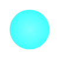
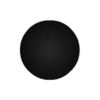

Note: Yellow, blue, pink and red orbs all have jump pad equivalents.
Sends the player a medium distance upwards.
Inverts gravity.
Sends the player a small distance upwards.
Inverts gravity and thrusts the player a medium distance.

Sends the player a large distance upwards.
Thrusts the player downwards.
Suspends the player in linear motion. Pink dash orbs invert gravity.
Acts as a toggle trigger when hit.